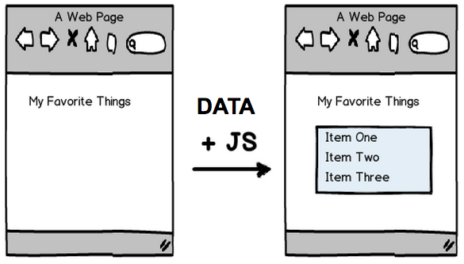
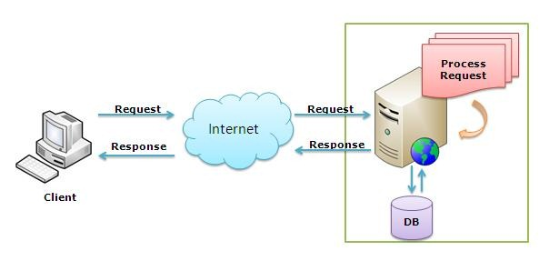

Asynchronous Technologies: AJAX/JSON
Review: HTML + JS, together!
Static Content + Progressive Enhancement

Example
Dynamic Content
Storing data in JSON
- Key/value pairs
- Key must be stored with quotes (unlike JS Objects)
- Value can be the following data types: Number, String, Boolean, Array, Object,
null - Resembles objects/hash tables/structs of programming languages
- Validate @ JSONLint.com
{
"firstName": "Jane",
"lastName": "Smith",
"address": {
"streetAddress": "425 2nd Street",
"city": "San Francisco",
"state": "CA",
"postalCode": 94107
},
"phoneNumbers": [
"212 732-1234",
"646 123-4567" ]
}
Using JS to turn JSON into DOM
var myProfile = {
"firstName": "Liz",
"lastName": "Howard",
"cats": ["Tribbles", "Jean Claws"]
};
var p = document.createElement('p');
p.innerHTML = 'My name is ' + myProfile.firstName + ' ' + myProfile.lastName + '. ';
p.innerHTML += 'My cats are ' + myProfile.cats.join(', ') + '.';
var p = $('<p>');
p.html('My name is ' + myProfile.firstName + ' ' + myProfile.lastName + '. ');
p.append('My cats are ' + myProfile.cats.join(', ') + '.');
Exercise Time!
Pair with the person(s) next to you to work through it together.
AJAX
= Asynchronous JavaScript and "XML"

AJAX in the Wild

What else?
Web 1.0 & User Interaction

Web 2.0 & User Interaction

Web 1.0 vs.Web 2.0
|
|
| Technologies Used: | Technologies Used: |
|
|
Requests & Responses

- Front-End: Hey, Back-End! Here's my credentials. Can I get some data? How about books on AJAX?
- Back-End thinks about it, decides how to handle request...
- Back-End looks in database, searches...
- Back-End: 200 OK, here are some books on AJAX!
- Front-End: Thanks! I'm going to make an online bookshelf with the data!
Anatomy of an XMLHttpRequest
// instantiate a new request
var request = new XMLHttpRequest();
// add event listeners
request.addEventListener('load', function () {
// transform a string into a usable object
console.log(JSON.parse(request.responseText));
});
request.open('get', '/path/to/api', true);
request.setRequestHeader('Content-type', 'application/json');
request.send();
XMLHttpRequest: Diving Deeper
- IE implemented XMLHR differently than the other browsers, so you must use the ActiveXObject if XMLHttpRequest is not available.
- Different CRUD methods may be used
- Sometimes you will need to send additional data
- Errors and responses need to be handled
But we don't usually write all that code...
jQuery + AJAX
Use the jQuery $.ajax function.
$.ajax({type: "GET",
url: "filename.json",
dataType: "json",
success: function(data) { },
error: function(xhr, status, e) { }
});
Using jQuery for everything
$.ajax({type: "GET",
url: "books.json",
dataType: "json",
success: function(books) {
for (var i = 0; i < books.length; i++) {
var book = books[i];
var p = $('<p>');
p.html(book.title + ' by ' + book.author);
$('body').append(p);
}
},
error: function(xhr, status, e) {
console.log(status, e);
}
});
Debugging AJAX Requests
- Click the NET/Network tab in Chrome Dev Tools or Firebug, select "XHR" filter to see all XMLHttpRequests made.
- See what the request responded with by clicking its "Response" tab.

Exploring this will keep you busy for hours.
Exercise Time!
Pair with the person(s) next to you to work through it together.

AJAX + Servers
$.ajax({type: "GET",
url: "/api/books",
dataType: "json",
data: {'sortBy': 'author'},
success: processBooks
});
$.ajax({type: "POST",
url: "/api/book/new",
dataType: "json",
data: {'title': 'I, Robot', 'author': 'I. Asimov'}
success: processBoooks
});
Cross Domain Policy
For http://store.company.com/dir/page.html:

AJAX Gotchas
- Cross domain requests have restrictions
- Multiple AJAX requests don't return in order
- Hard to transfer files
- Can't transfer binary content
- Browsers can over-cache/under-cache requests
UI No-Nos:
- Not having linkable state
- Not letting users know that something is loading
- Breaking the back button
- More here.
List of additional key concepts
- What are the parts of an HTTP request?
- What does CRUD stand for?
- What is the same origin policy?
- What are the 4 basic CRUD operations and methods?
- What is the difference between JSONP and JSON?